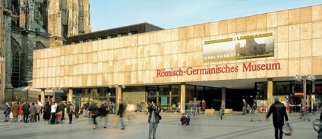
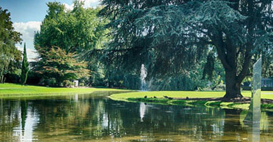
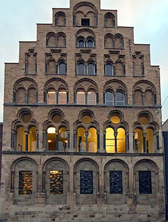

Colonia
Colonia (en alemán: Köln; Keulen en holandés) es la ciudad más antigua de Alemania,
situada en la cuenca del río Rin en el cruce de antiguas rutas comerciales.
Colonia es una ciudad de Alemania muy cosmopolita, cuenta con numerosos atractivos históricos y
culturales.
Su ambiente y animación atraen multitud de turistas de todo el mundo, siendo su celebración mas famosa
el Carnaval de Colonia.

Miluska: Colonia es una de las más destacadas ciudades de Alemania, debido a su ubicación, a orillas del río Rin, su gastronomía emplea recursos acuáticos desde los fundamentos de la pesca y la agricultura; además presenta notables influencias extranjeras que le aportan variedad e importancia.
El Metro es uno de los medios de transporte más concurridos en la ciudad, se encuentra operado por la empresa KVB y cubre gran parte del territorio de Colonia con sus 12 líneas de metro.
Uno de los mejores exponentes de la arquitectura gótica, la Catedral de Colonia constituye la más importante edificación sagrada del pueblo cristiano. Símbolo de la Colonia, esta Catedral es una de las más grandes del país y se erige sobre más de 100 pilares que sostienen su bóveda, iluminada por ventanas llenas de colores.
El Rheinpark es un amplio y popular parque urbano de la ciudad de Colonia que fue inaugurado en el año 1913, se encuentra ubicado a orillas del río Rin (Rhine en alemán) y es a él a quien debe su nombre. Este parque, debido a su gran amplitud, en sus 40 hectáreas alberga espacios como una zona balneario, un teatro alaire libre y unos baños públicos al estilo de termas romanas.

La Iglesia Roja o tambien conocida como la iglesia de San Pedro y San Pablo es una de las pocas iglesisas catolicas en Bielorrusia por lo que es un pais Ortodoxo. Esta iglesia esta muy adornada por adentro y todavia de da misa todos los dias para los Catolicos de la zona.
El Overstolzenhaus es uno de los edificios más antiguos que actualmente permanecen en pie en la ciudad de Colonia; Fue construido entre los años 1220 y 1225 y perteneció a la familia vitícola Overstolzen, de ahí que proviene su nombre que significa «Casa de los Overstolzen»; por su buen estado de conservación es uno de los mejores ejemplos de arquitectura alemana.
